The implementation is divided into frontend routes, reusable components, typed API helpers, backend routes, Pydantic/SQLAlchemy models, pure calculation services, static data and tests. The backend contains nine service modules and four test modules; the frontend contains six App Router routes, five principal components and a typed i18n subsystem.
The module map shows how source code is organised. The README documents quick start, rainfall provenance, hydrological methods, AHP weights, endpoints, environment variables and known deployment constraints. A reproducibility script rebuilds the precipitation raster from a source SQLite database. The implementation is committed to the project repository for review.
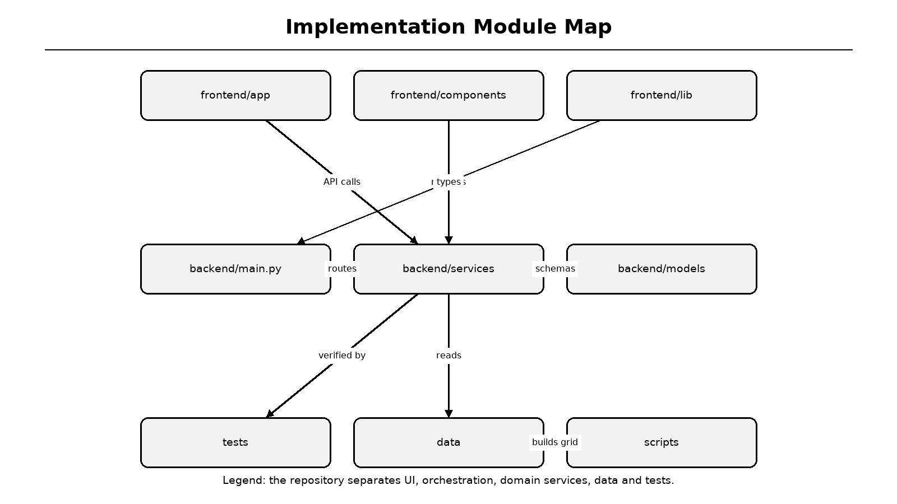
Figure 6.1: Implementation module map
Legend: frontend, backend, services, tests and static data are separated.
Table 6.1: Implemented modules
| Area | Modules | Status |
|---|---|---|
| Frontend pages | home, about, assess, results, ar | Completed |
| Frontend components | navbar, footer, map, AR viewer, language switcher | Completed |
| Backend API | health, weather, assess, report, history | Completed |
| Services | rainfall, hydrology, MCDA, cost, PDF | Completed |
| Data | CMAP raster, provenance JSON, Noto fonts | Completed |
| Tests | 38 backend tests | Passing |
The landing page introduces the problem, describes six capabilities and presents the five-step workflow. It uses responsive cards, iconography and motion effects while keeping all navigation accessible from the top bar. The About page lists the institution, research team, paper identification and reference summary.
The interface is intentionally lightweight. No 3D engine is loaded on the landing page; the AR viewer is dynamically imported only when the user opens the 3D route. This lazy-loading decision reduces initial JavaScript cost and prevents the rest of the application from depending on WebGL availability.
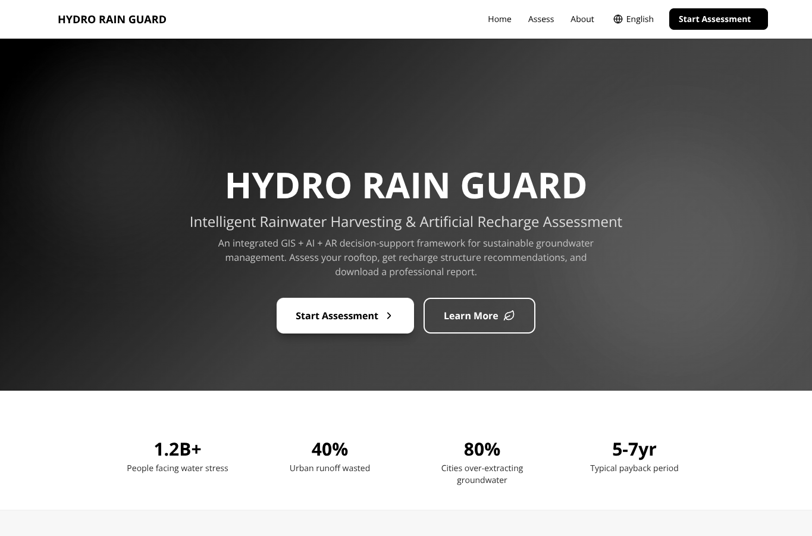
Figure 6.2: Implemented landing page
Legend: hero area, capability summary and primary call-to-action are shown.
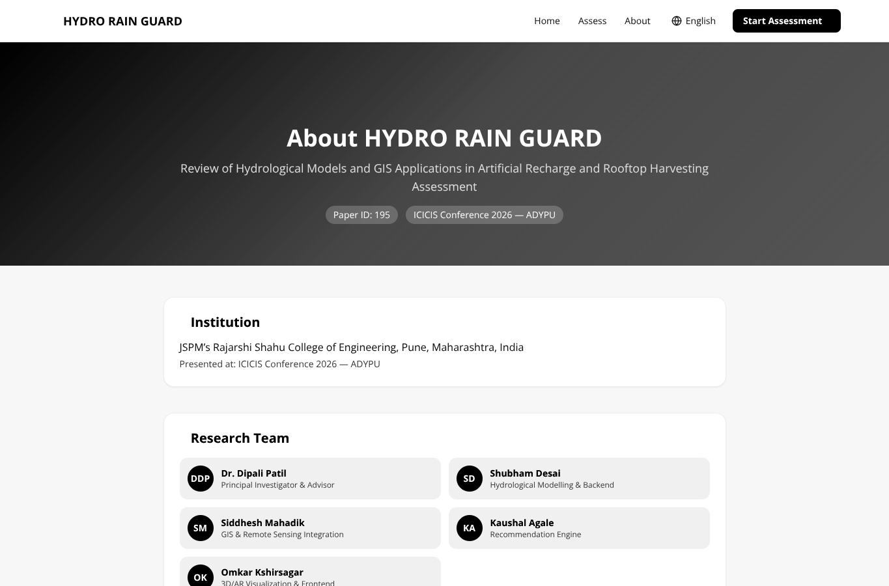
Figure 6.3: Implemented About page
Legend: institution, paper identity and research team are displayed.
Step one captures the project name, occupant count, site coordinates and location name. A Leaflet map allows the user to place a pin, search for a place, use device location or switch to manual coordinate entry. Photon is attempted first for geocoding and Nominatim is used as a fallback [36].
The coordinate state is lifted out of the form watch subscription. Shared InputField and SelectField components are declared at module scope, preventing React from unmounting and remounting the inputs on each keystroke. getValues reads coordinates only when the weather preview button is pressed, so typing high-precision decimal values remains stable.
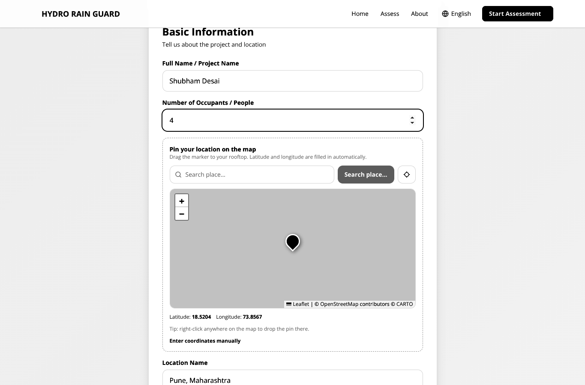
Figure 6.4: Assessment wizard - basic information and map pin
Legend: map controls, coordinate summary and manual-entry toggle are visible.
Step two selects roof type and area, fetches rainfall climatology and displays location, annual rainfall, temperature, humidity, dataset, climatology period and grid cell. A warning appears when the annual total comes directly from the coarse grid. The local override field replaces only the annual total while preserving the monthly distribution.
In the verified Pune example, the grid's 2.5-degree cell would overstate local rainfall; an IMD-style 700 mm override is applied. The screenshot shows 700 mm annual rainfall, source NOAA PSL CMAP, climatology 1991-2020 and grid cell 18.75 degrees, 73.75 degrees at 2.5-degree resolution.
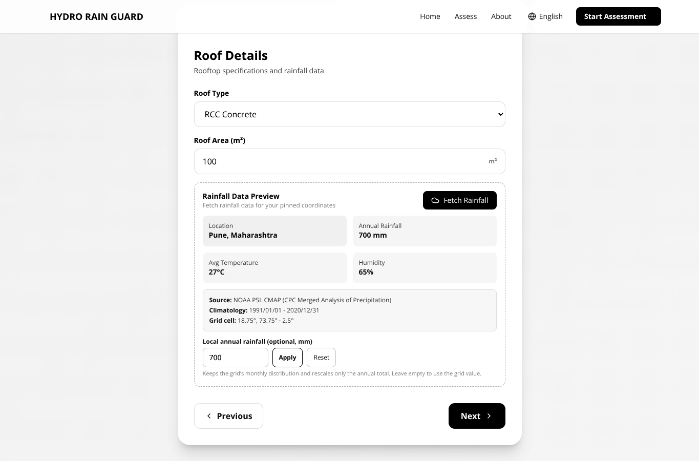
Figure 6.5: Assessment wizard - roof details and rainfall preview
Legend: rainfall provenance and local override controls are shown below the weather summary.
Step three captures open-space area, soil type, groundwater depth and the water tariff used for economic analysis. A contextual tip explains typical groundwater depths. The tariff is user-adjustable because avoided water cost is the most sensitive parameter in payback calculation; municipal and tanker rates can differ by an order of magnitude.
The Run Assessment button calls handleSubmit only on the final step. The wizard intentionally avoids a wrapping form element and marks all navigation buttons as type=button, preventing accidental submission while pressing Next. On success, the response is saved to localStorage and the browser navigates to /results?id=<assessment_id>.
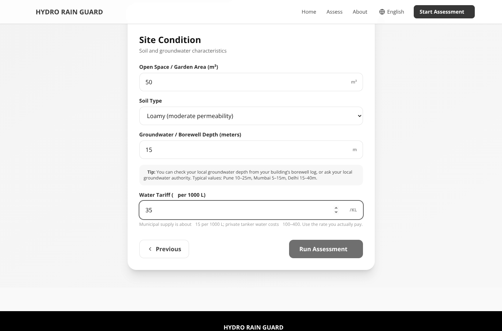
Figure 6.6: Assessment wizard - site conditions and final submission
Legend: soil, groundwater depth and tariff are entered before the final assessment.
The rainfall-grid service reads a compact binary raster containing twelve monthly means for a global 2.5-degree grid. It performs bilinear interpolation between four surrounding cell centres, handles longitude wrap-around at the dateline and rejects no-data cells. A companion JSON file stores dataset provenance and period metadata.
The weather service calls the grid sampler, optionally rescales monthly values to a user-supplied annual total and then attempts an optional OpenWeatherMap request. If the key is missing or the request fails, default temperature and humidity are used but rainfall remains available. This graceful degradation makes the core assessment independent of network access [15][30].
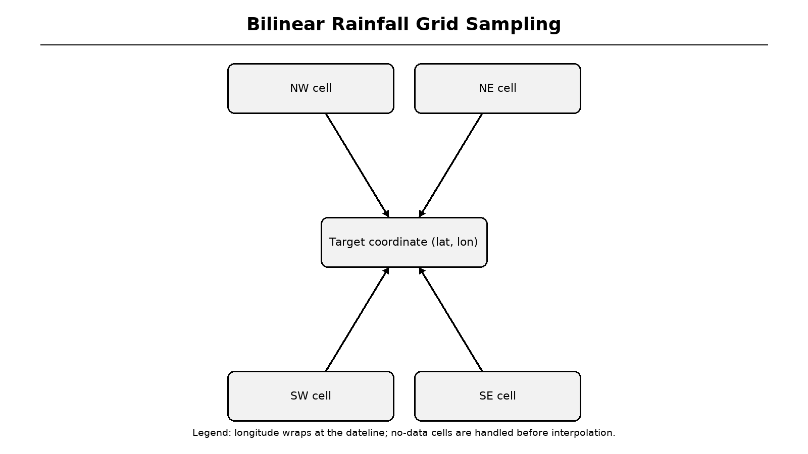
Figure 6.7: Bilinear rainfall grid sampling
Legend: four surrounding grid cells contribute to the interpolated monthly value.
Table 6.2: Rainfall provenance fields
| Field | Example value | Purpose |
|---|---|---|
| Source | NOAA PSL CMAP | Dataset identity |
| Period | 1991/01/01 - 2020/12/31 | Climatology baseline |
| Resolution | 2.5 degrees | Spatial uncertainty |
| Grid cell | 18.75 deg, 73.75 deg | Interpolation reference |
| Method | Grid monthly shape + local annual total | Override provenance |
| Grid estimate flag | false | Signals a local override was used |
The hydrology service maps roof materials to runoff coefficients and curve numbers. RCC uses C=0.90 and CN=98; metal uses 0.85 and 97; tile uses 0.75 and 95; green roof uses 0.30 and 75; asphalt uses 0.80 and 96. Monthly Rational runoff is computed as C times rainfall depth times roof area, with unit conversion from millimetres to litres.
SCS-CN is computed on each monthly rainfall total using S=25400/CN-254, Ia=0.2S and Q=(P-Ia)^2/(P-Ia+S) when P exceeds Ia [31]. A fixed first-flush allowance of 2 mm over 100 assumed events is deducted. In the Pune sample, Rational runoff is 63.0 KL and the SCS-CN cross-check is 65.3 KL, a difference of 3.7 percent.
Table 6.3: Roof coefficients and curve numbers
| Roof type | Runoff coefficient C | Curve number CN | Interpretation |
|---|---|---|---|
| RCC | 0.90 | 98 | Highly impervious |
| Metal | 0.85 | 97 | High runoff |
| Tile | 0.75 | 95 | Moderate-high runoff |
| Asphalt | 0.80 | 96 | Impervious |
| Green | 0.30 | 75 | Retention and evapotranspiration |
| for each month m: rational_L = C * R_m(mm) * A(m2) S = 25400 / CN - 254 Ia = 0.2 * S scs_L = (R_m - Ia)^2 / (R_m - Ia + S) * A if R_m > Ia else 0 harvestable = max(0, primary_annual - first_flush_loss) |
Recharge potential uses soil-specific infiltration rates: gravelly 30 mm/hr, sandy 25, loamy 12.5, silty 6.5 and clay 2.5. The service assumes 120 rainy days at eight hours per day, multiplies infiltration by open space and duration, and caps the result at 70 percent of rainfall over the open area. A rule-based feasibility score combines depth, soil, space and rainfall.
Structure definitions encode minimum harvestable volume, minimum open space, rainfall band, infiltration band and groundwater-depth band. A hard space filter removes physically impossible options before AHP scoring. For the Pune sample, recharge potential is 24.5 KL/year at 67.1 L/day and the feasibility score is 55/100.
Table 6.4: Recharge structure catalogue
| Structure | Minimum harvestable | Minimum space | Suitable condition |
|---|---|---|---|
| Rooftop Storage Tank | 0 L | 0 m2 | All buildings |
| Recharge Pit | 20 KL | 9 m2 | Permeable soil, moderate depth |
| Recharge Well | 60 KL | 4 m2 | Deep aquifer, limited surface space |
| Percolation Tank | 200 KL | 100 m2 | Large open plots |
| Soak Pit / French Drain | 10 KL | 6 m2 | Small roofs and moderate soil |
The MCDA service builds a five-by-five reciprocal pairwise matrix. Harvestable yield is preferred over annual rainfall, rainfall over soil infiltration, infiltration over open space and open space over groundwater depth. Geometric-mean weights are computed and checked with lambda-max, CI, RI and CR. The implementation reports CR=0.0152, below Saaty's 0.10 threshold [16].
Each criterion is converted to a 0-1 utility using ramp or trapezoidal functions. The weighted sum is multiplied by 100 to produce a suitability score. For the Pune sample, rooftop storage tank scores 93.0, soak pit 72.8, recharge pit 69.0 and recharge well 51.8. The percolation tank is filtered out because the available open space is too small.
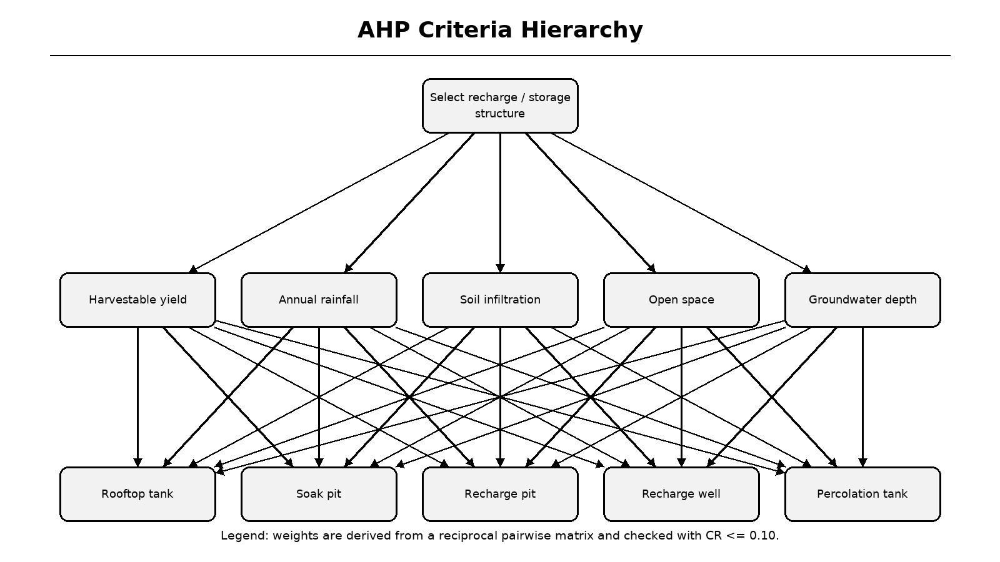
Figure 6.8: AHP criteria hierarchy
Legend: goal, criteria and candidate structures form the decision hierarchy.
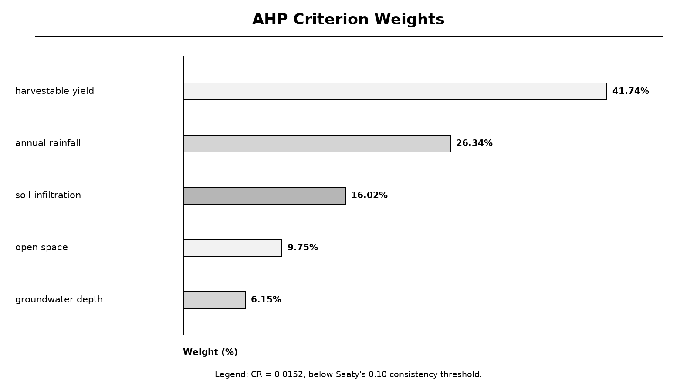
Figure 6.9: Derived AHP criterion weights
Legend: weights are percentages and are checked for internal consistency.
The cost-benefit service prices the top two recommended structures, adds plumbing estimated from roof perimeter and applies a user-selectable avoided-water tariff. Storage, recharge and plumbing costs are kept separate. Recharge benefit is valued conservatively at half the water tariff, annual maintenance is two percent of capital cost and ROI uses a ten-year horizon.
Monthly savings are derived from the harvestable monthly series after first-flush allocation; annual savings are the sum of those monthly values, so charts and summary cards cannot disagree. For the Pune sample, estimated cost is Rs. 53,000, annual savings Rs. 1,505, net annual benefit Rs. 874, payback 60.6 years and ten-year ROI -83.5 percent. The interface states that the system is not economically viable at this tariff within ten years.
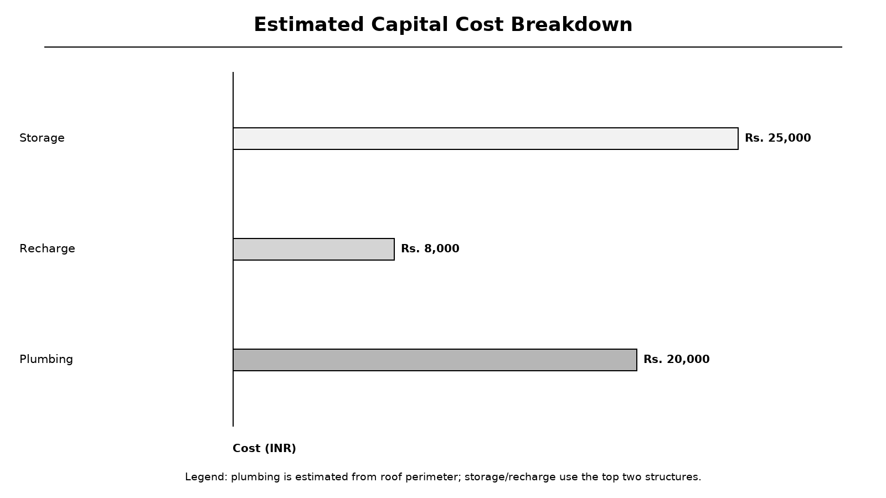
Figure 6.10: Estimated capital cost breakdown
Legend: bars show storage, recharge and plumbing components for the Pune sample.
Table 6.5: Economic parameters
| Parameter | Value | Meaning |
|---|---|---|
| Default tariff | Rs. 35/KL | Blended avoided water cost |
| Storage tank | Rs. 25,000 | Base structure cost |
| Soak pit | Rs. 8,000 | Base structure cost |
| Plumbing | Rs. 500/m | Roof perimeter estimate |
| Maintenance | 2%/year | Operating allowance |
| ROI horizon | 10 years | Decision horizon |
PDF generation uses ReportLab tables and flowables, with every input value, monthly series, recommendation, AHP audit field and economic assumption included [24]. Because ReportLab cannot shape Devanagari correctly, the text-shaping service uses HarfBuzz and fontTools to produce glyph outlines for Hindi and Marathi, while Latin text remains searchable [25][26].
The i18n layer provides English, Hindi and Marathi dictionaries with English fallback. The AR page lazy-loads a react-three-fiber viewer, builds geometry from roof area, tank volume, pit depth and well depth, and offers cutaway and label toggles [18]. WebXR AR placement is available only on supported secure-origin devices [19].
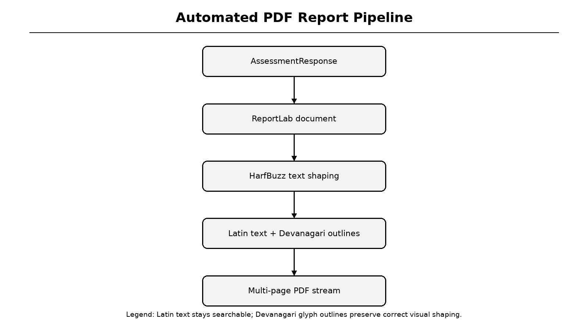
Figure 6.11: Automated PDF report pipeline
Legend: HarfBuzz shaping is applied before Devanagari text is drawn as vector outlines.
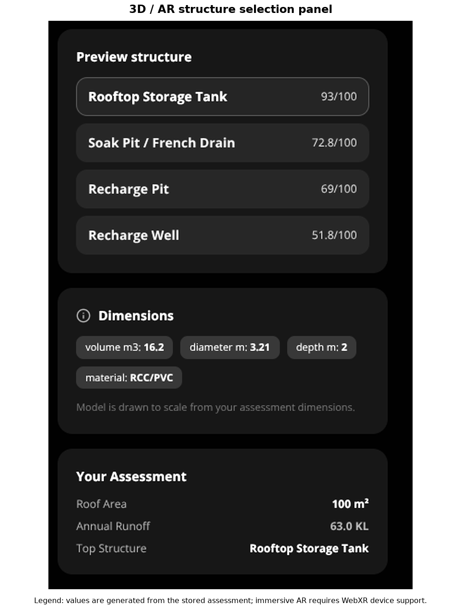
Figure 6.12: Implemented 3D/AR structure selection panel
Legend: scores and dimensions come from the stored assessment response.